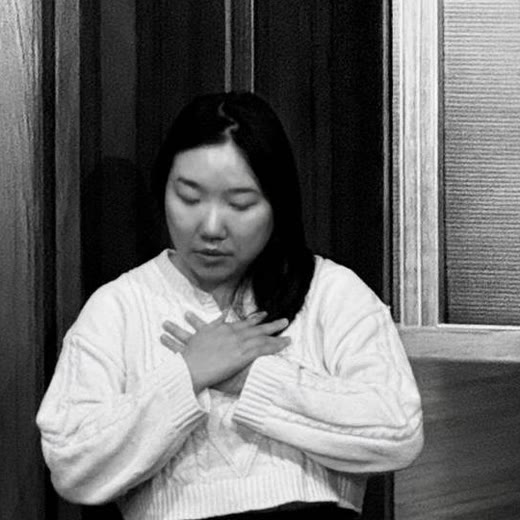
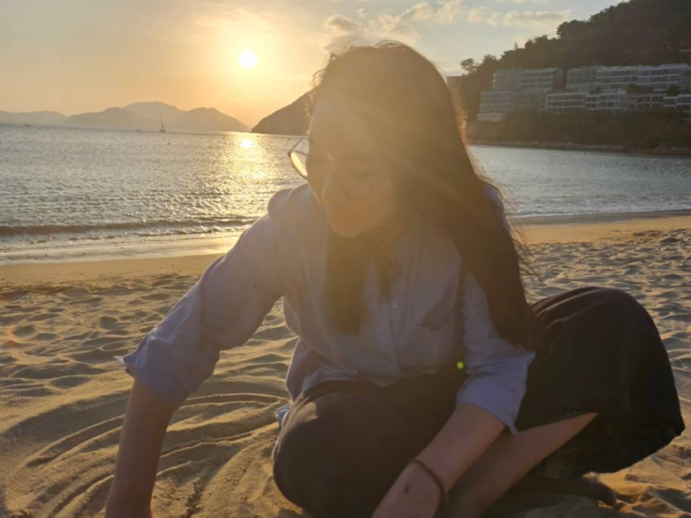

06
陪妳的人
Your Host
Joyce
Womb-Moon 神聖女人圈引導師 · 哲學背景 · 直覺引導
「了解自由的過程，也是在了解自身。曾經的我，很自由地獨旅，很自由地選擇哲學這一科。」
「殊不知，我還不是自由的：心中很多困頓、不斷重複的想法與習性……至今走在修行路上不斷觀照，開始選擇屬於當下的自己。」
連結自己，
也連結自然。
自由，
不是沒有規範，
而是在每一次選擇裡，
溫柔而堅定地，
回到自己的節奏。
射手座新月，
像夜空裡悄悄亮起的一盞燈。
它不催促我們立刻抵達遠方，
只是輕輕提醒：
妳心裡嚮往的地方，
值得妳一步一步走近。
願我們在 2027，不必成為誰期待的樣子，只需成為更誠實、更遼闊的自己。
有夢想，也有落地的勇氣；有遠方，也有當下安放的自己。
如果為自己的「自由度」給一個分數，從 1（最少）到 10（最多）——現在的妳，會有多少分？
這題沒有標準答案，也不用解釋。先讓那個數字浮上來就好——它常常比我們以為的誠實。

一個小時，三段。從呼吸回到身體，從彼此的分享照見自己，再往內走一趟，看看心裡真正嚮往的方向。
從呼吸回到自在。先感受自己，穩在腳下——不急著想「我應該往哪裡去」，先讓身體知道自己在這裡。
別人的分享，也能照見自身。我們輪流說說自己，讓彼此照亮心中所想——妳會發現，有些話不是只有妳在想。
找回心中的節奏與安定，照見新的可能性。不是逼自己定下 2027 的目標，而是先看見：妳真正想走近的，是什麼。
讓我們不再為他人而走，
而是重新選擇，為自己而過。
新月，是月亮走到最暗的那一晚——不是消失，是進到最深的休息。在占星裡，這是一個循環的起點：適合向內、適合休息，適合在黑暗裡，輕輕種下一個新的意圖。
12 月的新月，落在射手座。射手是一支射向遠方的箭，掌管的是視野、意義與自由：它問的不是「我做完了什麼」，而是「我為什麼要走這條路」。年末這個時間點落在射手，剛好——我們正要收束一年，也正要決定明年往哪裡去。
只是射手有一個很容易被忽略的另一半：那支箭，是從一雙穩穩踩在地上的腳射出去的。看得遠而站不穩，會變成漂浮；站得穩而看不遠，會變成困住。這一晚，我們兩個都要。
（星座意義為占星原型，陪我們看見自己，不是命定。）

「了解自由的過程，也是在了解自身。曾經的我，很自由地獨旅，很自由地選擇哲學這一科。」
「殊不知，我還不是自由的：心中很多困頓、不斷重複的想法與習性……至今走在修行路上不斷觀照，開始選擇屬於當下的自己。」